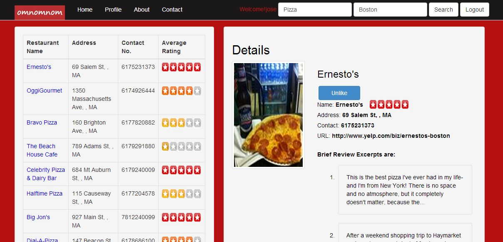

This is the SearchPage of OMNOMNOM. It provides a Food Search facility which filters out search results from the Yelp Api
based on the search key.
It also displays the outlets in the nearby locatino based on the search key.
Users can only like and comment on outlets only if they are logged in.
Users can view the following in the details view of each restaurant.
The top navigation bar enables Users to View their profile as well other User's Profile pages.
The snap shots of the Search Page are displayed below.
